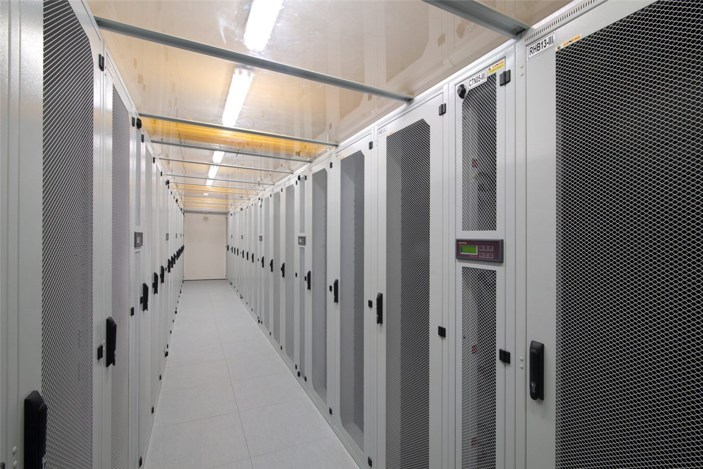

橋미국
미국트럼프 행정부 동향… 정보수장 교체·법무 정책에 시선
백악관이 국가정보국장 대행을 새로 지명하고, 법무부는 일부 정책 방향을 정리했다. 대외·통상 변수도 화인 경제에 파급.
백악관이 국가정보국장 대행을 새로 지명하고, 법무부는 일부 정책 방향을 정리했다. 대외·통상 변수도 화인 경제에 파급.

EU 지도자들이 우크라이나 지원, 2028~2034 예산, 방위·이민을 의제로 올렸다. 올해 회원국 8곳이 총선을 치른다.

7일간 본토·카나리아 제도 순방.

그레이트니코바르 섬 항만·공항·신도시 계획.

트럼프 미국 대통령이 이란과의 휴전을 60일 연장하고 호르무즈 해협의 양측 봉쇄를 해제하는 초기 합의를 발표했다. 30일 내 전쟁 이전 수준의 통항 회복이 목표다. 핵·제재 등 난제는 후속 협상으로 넘겼다.

이란 관영매체가 유조선·화물선 5척이 미군 봉쇄선을 통과했다고 전했다. 합의의 첫 실물 신호다. 그러나 통항 정상화까지는 30일의 단계적 일정이 남아 있다.

트럼프 대통령이 전후 이란 재건을 위한 대규모 기금 구상을 흘렸다. 한국·일본·유럽 기업의 참여를 거론했지만, 제재 해제와 핵 문제가 풀려야 가능한 '조건부 청사진'이다.
미 공군의 전략폭격기 B-52가 캘리포니아주에서 추락해 탑승 승무원 8명이 모두 숨졌다. 미군이 사고를 공식 확인했으며 원인 조사가 시작됐다.

일본 대형 타이어업체가 9월부터 가격을 올리기로 했다. 작은 품목의 인상이지만, 원자재·물류비 상승이 일본 소비자물가를 다시 자극하는 흐름을 보여준다.

중동 전쟁의 여파로 미국의 전략비축유 재고가 43년 만에 가장 낮은 수준으로 떨어졌다. 유가가 안정되는 지금, 곳간을 다시 채우는 일이 과제로 떠올랐다.

유럽연합이 우크라이나의 가입 협상 절차를 공식적으로 시작했다. EU는 이를 "중대한 이정표"라 평했지만, 실제 가입까지는 길고 까다로운 과정이 남아 있다.
영국이 우크라이나에 원전용 핵연료를 제공하고 러시아 제재를 강화하기로 했다. 에너지 자립을 통해 전시 우크라이나의 회복력을 떠받치려는 조치다.
미국 폭스가 스트리밍 플랫폼 로쿠를 약 33조 원 규모에 인수하기로 했다. 전통 방송사가 스트리밍 시대에 본격 합류하며 미디어 지형이 다시 흔들린다.

미국 규제당국이 오픈AI와 앤스로픽 등 인공지능 기업의 건강 정보와 미성년자 데이터 처리를 들여다보고 있다. 그럼에도 관련 주가는 견조한 흐름을 보였다.

국제 유가가 배럴당 70달러 선까지 밀리자, JP모건이 세계 증시에 '거대한 순풍'이 불 것이라 전망했다. 호르무즈 봉쇄 해제가 위험자산 선호를 되살렸다.

유럽 통합이 단일한 속도로 움직이지 않는다는 '다속도 유럽'론이 다시 주목받는다. 확대와 심화 사이에서 유럽이 택할 길을 두고 논쟁이 이어진다.

미국에서 본국으로 돌아가는 '역이민'이 늘고 있다는 분석이 나왔다. 생활비와 정치 환경의 변화가 일부 이민자의 선택을 바꾸고 있다는 진단이다.

한국의 한 여행사 데이터에서 올여름 가장 인기 있는 해외 행선지로 중국이 꼽혔다. 가까운 거리와 다양한 도시 선택지가 수요를 끌어올렸다.

월드컵 한국-멕시코 경기가 열리는 날, 멕시코 할리스코주가 휴교령을 내리고 거리 응원을 독려했다. 축구가 도시 전체를 광장으로 바꾸는 풍경이다.